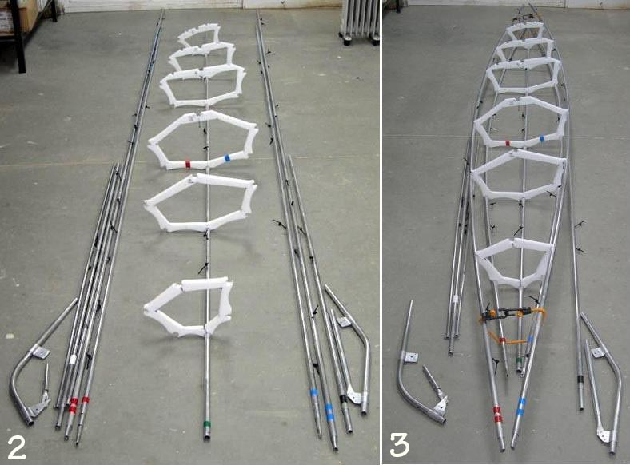

| Frame Assembly (5 of 8) | Menu Previous Page Next Page |
|

Step 2 - Snap cross sections 1 through 6 at their proper locations marked by the "rivet stops" along the keel. Step 3 - Attach the gunwale and then the chine stringers. Use a shock cord to hold the stringers in place until they are bolted to the bow and stern. Note - An alternative assembly method can be found at Sea Rider Frame Assembly. In this method, stringers are first bolted to the bow and stern before the HDPE cross sections are snapped in place. Use the (BACK) key to return. |
|